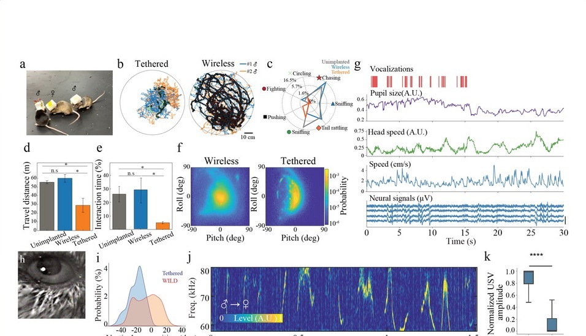

Publications
Publications
Publications spanning implantable neuroelectronics, flexible biointerfaces, ionic communication, and systems-neuroscience-oriented neural engineering.
Recent publications

Spatial control of doping in conducting polymers enables complementary, conformable, implantable internal ion-gated organic electrochemical transistors
Nature Communications
Single-material complementary organic transistors that support conformable, implantable high-performance bioelectronic circuits.


Earlier work
Accumulation of CaV3.2 T-type calcium channels in the uninjured sural nerve contributes to neuropathic pain in rats with spared nerve injury
Frontiers in Molecular Neuroscience
In vivo evidence that CaV3.2 accumulation in uninjured afferents contributes to neuropathic pain after nerve injury.
Mapping the Information Trace in Local Field Potentials by a Computational Method of Two-Dimensional Time-Shifting Synchronization Likelihood Based on Graphic Processing Unit Acceleration
Neuroscience Bulletin
GPU-accelerated analysis of time-shifted synchronization structure in local field potential recordings.